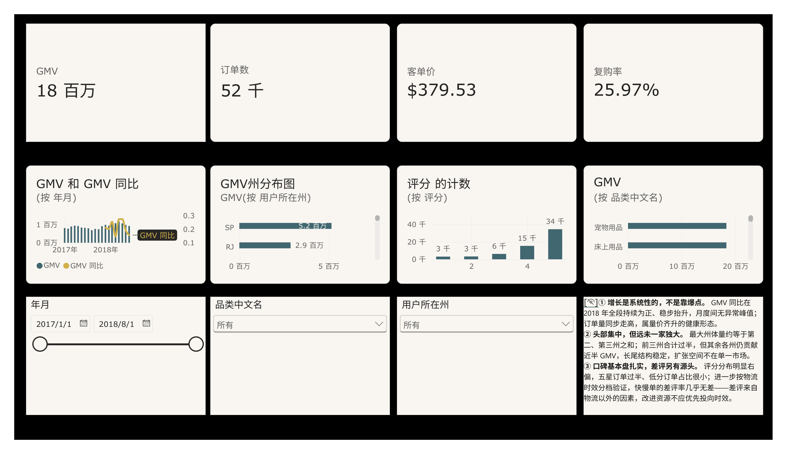

Power BI Dashboard · 2026
巴西 Olist 电商数据集 · 数据重组与经营分析
GMV
18 百万
订单数
52 千
客单价
$379.53
复购率
25.97%

Insights · 看板洞察
① 增长是系统性的，不是靠爆点。GMV 同比在 2018 年全段持续为正、稳步抬升，月度间无异常峰值；订单量同步走高，属量价齐升的健康形态。
② 头部集中，但远未一家独大。最大州体量约等于第二、第三州之和；前三州合计过半，但其余各州仍贡献近半 GMV，长尾结构稳定，扩张空间不在单一市场。
③ 口碑基本盘扎实，差评另有源头。评分分布明显右偏，五星订单过半、低分订单占比很小；进一步按物流时效分档验证，快慢单的差评率几乎无差——差评来自物流以外的因素，改进资源不应优先投向时效。